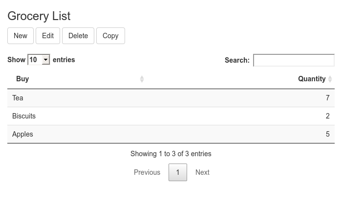
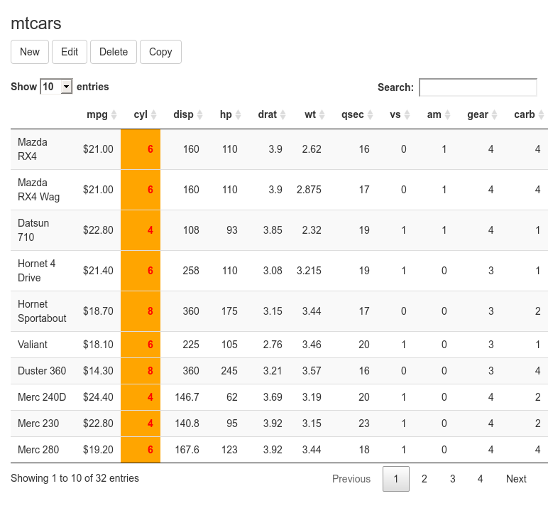

Abstract
Editable DataTables (DT) package for shiny apps. Originally created by Jason Bryer. Data columns to view or edit can be selected. Different datatypes can be edited. Valid input choices and interaction with persistent storage can be defined through callbacks. In the case of limited selection choices for data columns with ‘dropdown’ inputs, the choices can be defined and dynamically changed. Available in general-purpose and module versions.Package version : 2.2.4
The DTedit package allows the viewing and editing of dataframes, via the DT (DataTables for shiny) package.
An entry (row) of the viewed datatable is selected, and can then be edited, copied or deleted. New entries (rows) can be added.
Numerous data types (alphanumeric characters, passwords, numbers, dates, ‘categorical’/factors and raw ‘binary’) can be edited. The data columns which are viewed or edited can be chosen. In the case where choices are restricted (‘categorical’/factor, or if required, alphanumeric), the available choices can be dynamically chosen.
Using callbacks it is possible to further verify whether an entry/row has been modified in an acceptable way. callbacks can also be used to enable persistent storage of modified dataframes into databases.
dtedit (‘standard’ version) and dteditmod (‘module’ version) both return reactive versions of the editable dataframe. They also both accept reactive dataframes, and can change their copy of the dataframe in response to changes in the original reactive dataframe.
This vignette will describe the basic usage and features of DTedit.
Full option/argument descriptions can be found in the appendix.
dtedit
For the ‘standard’ (non-module) version, the dtedit object is defined within the server function. The name defined in the dtedit function (in this case Grocery_List) is referenced by a uiOutput object in the ui (user interface) definition, as seen in the very simple example below.
# minimal DTedit example 'dtedit' # you can try this example in interactive mode # with 'example("dtedit")' library(shiny) library(DT) library(DTedit) server <- function(input, output) { Grocery_List_Results <- dtedit( input, output, name = 'Grocery_List', thedata = data.frame( Buy = c('Tea', 'Biscuits', 'Apples'), Quantity = c(7, 2, 5), stringsAsFactors = FALSE ) ) } ui <- fluidPage( h3('Grocery List'), uiOutput('Grocery_List') ) shinyApp(ui = ui, server = server)

input and output in dtedit is the same as is received by the server function. thedata is a dataframe.
dteditmod
The module version dteditmod is very similar to dtedit, and accepts many of the same arguments.
dteditmod is referenced by the callModule function, which in turn is defined in shiny’s server function. Instead of using name, dteditmod uses id (in this case Grocery_List). The same id is referenced by dteditmodUI object in the ui (user interface) definition, surrounded by a shiny::NS function call, as seen in the example below.
# minimal DTedit example 'dteditmod' library(shiny) library(DTedit) myModuleUI <- function(id) { ns <- shiny::NS(id) shiny::tagList( dteditmodUI(ns('Grocery_List')) ) } myModule <- function(input, output, session) { Grocery_List_Results <- shiny::callModule( dteditmod, id = 'Grocery_List', thedata = data.frame( Buy = c('Tea', 'Biscuits', 'Apples'), Quantity = c(7, 2, 5), stringsAsFactors = FALSE ) ) } ui <- fluidPage( h3('Grocery List'), myModuleUI('myModule1') ) server <- function(input, output, session) { shiny::callModule(myModule, 'myModule1') } shinyApp(ui = ui, server = server)
In this vignette, the ‘standard’ dtedit is mostly used. Some examples referenced, but not fully described, in the DTedit package use the modular dteditmod.
dtedit (or dteditmod)dtedit returns a list. The list includes $thedata, which is a reactive and will change when dtedit’s copy of the dataframe changes. The list also includes $rows_selected, which is a reactive and will change when a different row is selected.
In the example below, the results are stored in a variable name Grocery_List_Results. Every time the internal copy of thedata changes, so does Grocery_List_Results$thedata.
An observeEvent waits for changes in Grocery_List_Results$thedata.
The observeEvent then messages the contents of Grocery_List_Results$thedata to the console.
Similarly, an observeEvent waits for changes in Grocery_List_Results$rows_selected.
server <- function(input, output) { Grocery_List_Results <- dtedit( input, output, name = 'Grocery_List', thedata = data.frame( Buy = c('Tea', 'Biscuits', 'Apples'), Quantity = c(7, 2, 5), stringsAsFactors = FALSE ) ) observeEvent(Grocery_List_Results$thedata, { message(Grocery_List_Results$thedata) }) observeEvent(Grocery_List_Results$rows_selected, ignoreNULL = FALSE, { # 'no' (NULL) row will be 'selected' after each edit of the data message(paste("Selected row:", Grocery_List_Results$rows_selected)) }) } ui <- fluidPage( h3('Grocery List'), uiOutput('Grocery_List') ) shinyApp(ui = ui, server = server)
A more sophisticated approach to handling changing of the data is by using callbacks.
In the example below, callback.update is defined, and checks whether the purchase Quantity is less than zero. If Quantity is less than zero, an error is thrown, and it is not possible to store the updated data.
Note that callback.insert has been defined differently, and so it is still possible to create a new entry/row which has a negative purchase amount! In grocery.insert.callback, new entries must have a non-empty Buy entry, and does not allow more than ten quantity. Of course, grocery.update.callback and grocery.insert.callback could be re-defined to be consistent with each other.
Note that grocery.insert.callback combines error messages, and makes use of HTML line breaks.
server <- function(input, output) { grocery.update.callback <- function(data, olddata, row) { # 'data' contains the dataframe *after* the row has been updated # 'row' is the row number where data has been updated # 'olddata' is the previous version of the data if (data[row, "Quantity"] < 0) { stop("Can't buy less than zero (0)!") } return(data) } grocery.insert.callback <- function(data, row) { # 'data' contains the dataframe *after* the row has been inserted msg <- list() if (data[row, "Buy"] == "") { msg[[1]] <- "Item name can't be empty!" } if (data[row, "Quantity"] > 10) { msg[[2]] <- "Can't buy more than ten (10)!" } msg <- Filter(Negate(is.null), msg) if (length(msg)) stop(paste(msg, collapse = "<br>")) return(data) } Grocery_List_Results <- dtedit( input, output, name = 'Grocery_List', thedata = data.frame( Buy = c('Tea', 'Biscuits', 'Apples'), Quantity = c(7, 2, 5), stringsAsFactors = FALSE ), callback.update = grocery.update.callback, callback.insert = grocery.insert.callback ) } ui <- fluidPage( h3('Grocery List'), uiOutput('Grocery_List') ) shinyApp(ui = ui, server = server)
More sophisticated callbacks can take the opportunity to store changed data in a persistent database. This is demonstrated in dtedit_demo(). The source code for the demonstration can be seen with
in the app.R tab.
The modular dteditmod version of the callbacks demonstration, with multiple callbacks for multiple datatables, can be seen with
dtedit_mod_demo(options = list(display.mode = "showcase"))in the app_mod.R tab.
inputEvent - observing input events from the New/Edit/Copy modal dialogsobserveEvents, to watch for changes in the input dialogs, are created with the help of the inputEvent parameter. This is particularly useful for creating feedback to the user ‘on the fly’. It was designed to use together with shinyfeedback, but does not depend on shinyfeedback.
In the example below, which uses shinyfeedback, inputEvent is a named list, including functions with the names of editable columns. The functions takes an inputId argument of the input dialog which is related to the editable column. The function can then access the contents of the input dialog, create shinyfeedback messages, or even change the contents of the input dialog.
library(shiny) library(DTedit) server <- function(input, output) { Grocery_List_Results <- dtedit( input, output, name = 'Grocery_List', thedata = data.frame( Buy = c('Tea', 'Biscuits', 'Apples'), Quantity = c(7, 2, 5), stringsAsFactors = FALSE ), inputEvent = list( Quantity = function(x) { value <- input[[x]] # if empty input box, will be NA if (!is.na(value) && value < 0) { shinyFeedback::showFeedbackWarning( inputId = x, text = "Less than zero" ) } else { shinyFeedback::hideFeedback(x) } if (!is.na(value) && value > 10 && value <= 100) { shinyFeedback::showToast("success", "That's a lot!") } if (!is.na(value) && value > 100) { shinyFeedback::showToast("error", "Too many, try again!") shiny::updateNumericInput( session = shiny::getDefaultReactiveDomain(), inputId = x, value = NA ) } }, Buy = function(x) { value <- input[[x]] if (value == "") { shinyFeedback::showFeedbackDanger( inputId = x, text = "Name must not be empty!" # note that this is just a warning, really # since this feedback itself does not # enforce the warning. ) } else { shinyFeedback::hideFeedback(x) } } ) ) } ui <- fluidPage( shinyFeedback::useShinyFeedback(), h3('Grocery List'), uiOutput('Grocery_List') ) shinyApp(ui = ui, server = server)
thedata dataframethedata can be a reactive reactiveVal, in which case dtedit’s copy of the thedata will change in response to changes in the original dataframe. In the example below, the input buttons more and less trigger changes in mydata, which will be detected by dtedit.
In the call to dtedit, mydata is referred to in the thedata definition as mydata, not mydata().
Changes in dtedit’s copy of the data as the result of editing within dtedit do not automatically change the original dataframe mydata. The example below has set up an observeEvent to
Note that Grocery_List_Results$thedata does not have trailing parentheses ‘()’.
server <- function(input, output) { mydata <- reactiveVal({ data.frame( Buy = c('Tea', 'Biscuits', 'Apples'), Quantity = c(7, 2, 5), stringsAsFactors = FALSE ) }) Grocery_List_Results <- dtedit( input, output, name = 'Grocery_List', thedata = mydata ) observeEvent(input$more, { # if the 'Buy More!' button is pressed newdata <- data.frame( Buy = mydata()$Buy, Quantity = mydata()$Quantity * 2, # doubles the quantity stringsAsFactors = FALSE ) mydata(newdata) }) observeEvent(input$less, { # if the 'Too Much!' button is pressed newdata <- data.frame( Buy = mydata()$Buy, Quantity = mydata()$Quantity * 0.5, # halves the quantity stringsAsFactors = FALSE ) mydata(newdata) }) observeEvent(Grocery_List_Results$thedata, { # the data has been added # copy the changes to our own copy mydata(Grocery_List_Results$thedata) }) } ui <- fluidPage( h3('Grocery List'), uiOutput('Grocery_List'), actionButton(inputId = "more", label = "Buy More!"), actionButton(inputId = "less", label = "Too Much!") ) shinyApp(ui = ui, server = server)
Another example of reactive dataframes can be seen, with source code, with
the code is in the app.R tab. A modular version, using dteditmod, can be seen with example(dteditmodUI).
Sometimes not all columns of a dataframe should be viewed, or edited. The columns to edit or view can be defined.
In the example below, edit.cols is defined such that only Quantity and Comment columns can be edited. The Quantity column is not seen in the datatable view, because it is not included in the view.cols definition.
In addition, delete, add and copy buttons have been turned off with show.delete, show.insert and show.copy options all set to FALSE.
server <- function(input, output) { Grocery_List_Results <- dtedit( input, output, name = 'Grocery_List', thedata = data.frame( Buy = c('Tea', 'Biscuits', 'Apples'), Quantity = c(7, 2, 5), Comment = c('Irish', 'Not too sweet', 'Jonathan'), stringsAsFactors = FALSE ), edit.cols = c('Quantity', 'Comment'), view.cols = c('Buy', 'Comment'), show.delete = FALSE, show.insert = FALSE, show.copy = FALSE ) } ui <- fluidPage( h3('Grocery List'), uiOutput('Grocery_List') ) shinyApp(ui = ui, server = server)
datatable.call and datatable.rownames
DTedit uses DT by calling DT::renderDataTable. DT provides helper functions format*() to format table columns as currency, percentages or round numbers. To use the helper functions, the data needs to be pre-processed by DT::datatable and DT::format*() before being passed to DT::renderDataTable. These helper functions can be accessed by defining datatable.call as a pre-processing function.
The formatting demonstrated below is not actually appropriate to the mtcars data, but is used for demonstration purposes. The formatting does not work unless datatable.rownames is set to TRUE.
library(magrittr) # provides the pipe '%>%' operator server <- function(input, output, session) { dtedit( input, output, name = 'mtcarstable', thedata = mtcars, datatable.rownames = TRUE, # needed for the format*() functions to work datatable.call = function(...) { DT::datatable(...) %>% formatSignif('qsec', 2) %>% formatCurrency('mpg') %>% formatStyle( 'cyl', color = 'red', backgroundColor = 'orange', fontWeight = 'bold' ) # note, none of this is proper formatting for the mtcars data! # but serves to demonstrate the formatting } ) } ui <- fluidPage( h3('mtcars'), uiOutput('mtcarstable') ) shinyApp(ui = ui, server = server)

By default, datatable.call is defined as :
function(...) {DT::datatable(...)}
DTedit will pass several arguments to datatable.call.
data a dataframe. May have been processed to add actionButtons
options - datatable.options
rownames - datatable.rownames
escape - escape all columns except those with actionButtons.selection - single
input.types
The data class of the column determines the default input type of the column. The mappings are :
input.types can be explicitly defined.
Valid input.types are :
shinyWidgets (>= 0.5.2) package and useairDatepicker option.For an example of explicit definition, see selectInput.
selectInput and selectInputReactive
Drop down choices can be defined statically by defining input.types as selectInput. selectInput will look for possible input choices in the following ways :
input.choices is defined (as in the example below)factorsDrop down choices can be changed dynamically by defining input.types as selectInputReactive. The input.choices for a selectInputReactive is a list name (in this case buy.types.list) in input.choices.reactive. buy.types.list in input.choices.reactive defines a reactive variable, which in the example below is buy.Types.
In the example below, if the radioButton choices is changed to More (value = 2), then the reactive variable buy.Types is changed to the longer vector of grocery names.
server <- function(input, output) { less_choices <- c('Tea', 'Biscuits', 'Apples', 'Cheese') more_choices <- c(less_choices, 'Coffee', 'Pears', 'Fish') buy.Types <- reactiveVal(less_choices) Grocery_List_Results <- dtedit( input, output, name = 'Grocery_List', thedata = data.frame( Buy = c('Tea', 'Biscuits', 'Apples'), Type = c('Plant', 'Processed', 'Fruit'), Quantity = c(7, 2, 5), stringsAsFactors = FALSE ), input.types = list( Buy = 'selectInputReactive', Type = 'selectInput' ), input.choices = list( Buy = 'buy.Types.list', Type = c('Plant', 'Processed', 'Fruit', 'Animal') ), input.choices.reactive = list(buy.Types.list = buy.Types) ) observeEvent(input$choice, { if (input$choice == 1) { buy.Types(less_choices) } else { buy.Types(more_choices) } }) } ui <- fluidPage( h3('Grocery List'), uiOutput('Grocery_List'), radioButtons( 'choice', label = 'Buy choices', choices = list('Less' = 1, 'More' = 2), selected = 1 ) ) shinyApp(ui = ui, server = server)
selectInputReactive is demonstrated with
with the source code in the app.R tab. In this demonstration, names.Types (user types) and names.Likes (potential user Likes) are reactive variables which are used to determine the choices to selectInputReactive and selectInputMultipleReactive in the names DataTable. names.Types and names.Likes are themselves altered by changes in two other DTedit datatables.
The same demonstration is shown as part of the demonstration using modular dteditmod
with source code in the app_mod.R tab. The interacting datatables are in the Emails tab.
dtedit and dteditmod help| dtedit | R Documentation |
dtedit - editable DataTable
dteditmod - editable DataTable, adapted for use in modules
dtedit(input, output, name, thedata, ...)
dteditmod(
input,
output,
session,
thedata,
view.cols = names(shiny::isolate(if (shiny::is.reactive(thedata)) { thedata() }
else { thedata })),
edit.cols = names(shiny::isolate(if (shiny::is.reactive(thedata)) { thedata() }
else { thedata })),
edit.label.cols = edit.cols,
delete.info.cols = view.cols,
delete.info.label.cols = delete.info.cols,
input.types,
input.choices = NULL,
input.choices.reactive = NULL,
inputEvent = NULL,
action.buttons = NULL,
selectize = TRUE,
modal.size = "m",
text.width = "100%",
textarea.width = "570px",
textarea.height = "200px",
date.width = "100px",
datetime.width = "200px",
numeric.width = "100px",
select.width = "100%",
defaultPageLength = 10,
max.fileInputLength = 1e+08,
title.delete = "Delete",
title.edit = "Edit",
title.add = "New",
label.delete = "Delete",
label.edit = "Edit",
label.add = "New",
label.copy = "Copy",
label.save = "Save",
label.cancel = "Cancel",
icon.delete = NULL,
icon.edit = NULL,
icon.add = NULL,
icon.copy = NULL,
text.delete.modal = "Are you sure you want to delete this record?",
show.delete = TRUE,
show.update = TRUE,
show.insert = TRUE,
show.copy = TRUE,
callback.delete = function(data, row) { },
callback.update = function(data, olddata, row) { },
callback.insert = function(data, row) { },
callback.actionButton = function(data, row, buttonID) { },
click.time.threshold = 2,
useairDatepicker = FALSE,
datatable.options = list(pageLength = defaultPageLength),
datatable.rownames = FALSE,
datatable.call = function(...) { DT::datatable(...) },
...
)
input
|
Shiny input object passed from the server. |
output
|
Shiny output object passed from the server. |
name
|
( |
thedata
|
a data frame to view and edit. can be a reactive |
…
|
arguments not recognized by DTedit are passed to |
session
|
Shiny session object (an environment) passed from the server. Alternatively, the ‘name’ (character) of the outputted editable datatable. |
view.cols
|
character vector with the column names to show in the DataTable. This can be a subset of the full |
edit.cols
|
character vector with the column names the user can edit/add. This can be a subset of the full |
edit.label.cols
|
character vector with the labels to use on the edit and add dialogs. The length and order of |
delete.info.cols
|
character vector with the column names specifying which values are presented on the delete dialog. This can be a subset of the full |
delete.info.label.cols
|
character vector with the labels to use on the delete dialog. The length and order of |
input.types
|
a character vector where the name corresponds to a column in
One case where this parameter is desirable is when a text area is required instead of a simple text input. |
input.choices
|
a list of character vectors. The names of each element in the list must correspond to a column name in the data. The value, a character vector, are the options presented to the user for data entry, in the case of input type
In the case of input type In the case of input type ‘fileInput“ this is the ’accept’ argument, which specifies the type of file which is acceptable. Can be a case insensitive file extension (e.g. ‘.csv’ or ‘.rds’) or a MIME type (e.g. ‘text/plain’ or ‘application/pdf’). |
input.choices.reactive
|
a named list of reactives, referenced in ‘input.choices’ to use for input type |
inputEvent
|
a named list of functions. The names of each element in the list must correspond to an editable column name in the data. The function is called when the associated input widget event is observed during editing/adding a data row. Can be used, for example, with |
action.buttons
|
a named list of action button columns. Each column description is a list of
|
selectize
|
Whether to use selectize.js or not. See |
modal.size
|
the size of the modal dialog. See |
text.width
|
width of text inputs. |
textarea.width
|
the width of text area inputs. |
textarea.height
|
the height of text area inputs. |
date.width
|
the width of data inputs |
datetime.width
|
the width of datetime inputs |
numeric.width
|
the width of numeric inputs. |
select.width
|
the width of drop down inputs. |
defaultPageLength
|
number of rows to show in the data table by default. |
max.fileInputLength
|
the maximum length (in bytes) of |
title.delete
|
the title of the dialog box for deleting a row. |
title.edit
|
the title of the dialog box for editing a row. |
title.add
|
the title of the dialog box for inserting a new row. |
label.delete
|
the label of the delete button. |
label.edit
|
the label of the edit button. |
label.add
|
the label of the add button. |
label.copy
|
the label of the copy button. |
label.save
|
the label of the save button. |
label.cancel
|
the label of the cancel button. |
icon.delete
|
the icon for the delete button, e.g. |
icon.edit
|
the icon for the edit button, e.g. |
icon.add
|
the icon for the add button, e.g. |
icon.copy
|
the icon for the copy button, e.g. |
text.delete.modal
|
the text shown in the delete modal dialog. |
show.delete
|
whether to show/enable the delete button. |
show.update
|
whether to show/enable the update button. |
show.insert
|
whether to show/enable the insert button. |
show.copy
|
whether to show/enable the copy button. |
callback.delete
|
a function called when the user deletes a row. This function should return an updated data.frame. |
callback.update
|
a function called when the user updates a row. This function should return an updated data.frame. |
callback.insert
|
a function called when the user inserts a new row. This function should return an updated data.frame. |
callback.actionButton
|
a function called when the user clicks an action button. called with arguments |
click.time.threshold
|
This is to prevent duplicate entries usually by double clicking the save or update buttons. If the user clicks the save button again within this amount of time (in seconds), the subsequent click will be ignored. Set to zero to disable this feature. For developers, a message is printed using the warning function. |
useairDatepicker
|
use |
datatable.options
|
options passed to |
datatable.rownames
|
show rownames as part of the datatable? |
datatable.call
|
pre-processing call when calling
|
dtedit is used in conjunction with uiOutput to create editable datatables. dtedit is used in a shiny application’s server definition, uiOutput is used in the UI (user interface) definition.
dteditmod is used in conjunction with callModule and dteditmodUI to create editable datatables in a module environment. dteditmod is called through callModule in the ‘server’ section of the shiny application. dteditmodUI is called in the ‘UI’ (user-interface) section of the shiny app.
This object will maintain data state. However, in order of the data to persist between Shiny instances, data needs to be saved to some external format (e.g. database or R data file). The callback functions provide a mechanism for this function to interact with a permanent data storage scheme. The callback functions are called when the user adds, updates, or deletes a row from the data table. The callback must accept two parameters: data and row. For inserting and updating, the data object is the current state of data table including any additions or updates. The row parameter indicates which row from data was modified (or added). For deletions, however, the data represents the data table just before deleting the specified row. That is, if callback.delete returns a data.frame, that will be the new data table; otherwise this function will remove row row from data and that will become the current data table.
The callback functions may throw errors (see e.g. stop) if there are problems with data. That is, if data validation checks indicate data problems before inserting or updating a row the function may throw an error. Note that the error message will be presented to the user so providing messages meaningful to the user is recommended. Moreover, if an error is thrown, the modal dialog is not dismissed and the user can further edit the data and retry the insertion or update.
Callback functions may return a data.frame. When a data.frame is returned that will become the current state of the data table. If anything else is returned then the internal data.frame will be used.
Returns reactiveValues
theData - the current state of DTedit’s copy of the data
view.cols
edit.cols
edit.count - number of edits to data done within DTedit (does not include changes to DTedit’s copy of the data secondary to changes of a reactive thedata)
rows_selected - the row number selected. initially set to NULL
example(“dtedit”) a simple example.
dtedit_demo() demonstration of dtedit.
dtedit_reactive_demo() reactive dataframe
dtedit_selectInputReactive_demo() reactive selectInput
dteditmodUI : the companion user-interface function for dteditmod.
example(“dteditmodUI”) a simple module example with reactive dataframe
dteditmod_demo() a more complex module example. Database interaction and interactions between the data of multiple datatables.
dteditmod_fileInput_demo() a modular example including binary file input and action buttons.
Other Datatable Edit functions: dteditmodUI()
# minimal DTedit example 'dtedit'
# you can try this example in interactive mode
# with 'example("dtedit")'
library(shiny)
library(DTedit)
server <- function(input, output) {
Grocery_List <- dtedit(
input, output,
name = 'Grocery_List',
thedata = data.frame(
Buy = c('Tea', 'Biscuits', 'Apples'),
Quantity = c(7, 2, 5),
stringsAsFactors = FALSE
)
)
}
ui <- fluidPage(
h3('Grocery List'),
uiOutput('Grocery_List')
)
if (interactive())
shinyApp(ui = ui, server = server)
#### end of 'dtedit' example ####
# minimal DTedit example 'dteditmod'
# this is a separate application from the 'dtedit' example!
#
# unfortunately, this application cannot be
# tried with 'example("dteditmod")', but you can copy
# and paste to execute in 'interactive' console mode,
# or copy the lines into an '.R' file and choose
# 'Run App' from RStudio.
library(shiny)
library(DTedit)
myModuleUI <- function(id) {
ns <- shiny::NS(id)
shiny::tagList(
dteditmodUI(ns('Grocery_List'))
)
}
myModule <- function(input, output, session) {
Grocery_List_Results <- shiny::callModule(
dteditmod,
id = 'Grocery_List',
thedata = data.frame(
Buy = c('Tea', 'Biscuits', 'Apples'),
Quantity = c(7, 2, 5),
stringsAsFactors = FALSE
)
)
}
server <- function(input, output, session) {
shiny::callModule(myModule, 'myModule1')
}
ui <- fluidPage(
h3('Grocery List'),
myModuleUI('myModule1')
)
if (interactive() || isTRUE(getOption("shiny.testmode")))
shinyApp(ui = ui, server = server)
dteditmodUI help| dteditmodUI | R Documentation |
dteditmodUI - user-interface function for module use
dteditmodUI(id)
id
|
the namespace of the module |
Use in conjunction with callModule and dtedit to create editable datatables. dteditUI is used in the ‘user interface’ component of the shiny app.
dteditmod : the companion server-component function.
example(“dteditmodUI”) a simple example with a reactive dataframe
dteditmod_demo() a more complex example. Includes database interaction and interactions between the data of multiple datatables.
Other Datatable Edit functions: dtedit()
##### Minimal DTedit example using reactive dataframe #####
library(shiny)
library(DTedit)
##### module ######################
myModuleUI <- function(id) {
ns <- shiny::NS(id)
shiny::tagList(
dteditmodUI(ns("dataspace"))
)
}
myModule <- function(input, output, session, data_scramble) {
data <- reactiveVal() # # 'data' will be a 'reactive' dataframe
data(data.frame(Column1 = c("Apple", "Cherry", "Frozen"),
Column2 = c("Pie", "Tart", "Yoghurt"),
stringsAsFactors = FALSE))
data_DT_gui <- callModule(
dteditmod,
"dataspace",
thedata = data,
edit.cols = c("Column1", "Column2")
)
observe({
data(
isolate(
as.data.frame(
data_DT_gui$thedata,
stringsasfactors = FALSE
)
)
)
print(isolate(data()))
print(paste("Edit count:", data_DT_gui$edit.count))
# only reacts to change in $edit.count
})
observeEvent(data_scramble(), {
print("Scrambling...")
temp <- data()
if (nrow(temp) > 0) {
row <- sample(seq_len(nrow(temp)), 1) # row
col <- sample(1:2, 1) # column
temp[row, col] <- paste(
sample(unlist(strsplit(temp[row, col], "")),
nchar(temp[row, col])),
sep = '', collapse = '')
data(temp) # adjusted dataframe 'automatically' read by DTedit
}
})
}
##### Create the Shiny server #####
server <- function(input, output) {
data_scramble <- shiny::reactive({
input$data_scramble
})
shiny::callModule(myModule, "myModule1", data_scramble)
}
##### Create the shiny UI ######
ui <- fluidPage(
h3("DTedit using reactive dataframe"),
wellPanel(p("Try the 'Scramble' button!")),
myModuleUI("myModule1"),
actionButton("data_scramble", "Scramble an entry")
)
if (interactive() || isTRUE(getOption("shiny.testmode")))
shinyApp(ui = ui, server = server)